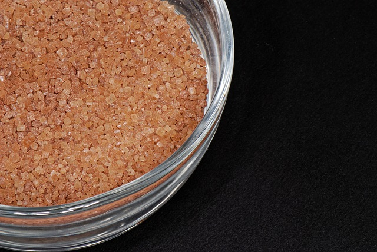

Some links to more info or recipes for your homebrew:
Yields 6(ish) Quarts
* Because komucha is contains live cultures that feed on whatever they come in contact with, it's important to make sure you choose the purest ingredients possible. GMO products frequently have been propogated with glyphosate, which is connected with many different kinds of ailments and disease.
** You can get a SCOBY locally, online, or from a friend. (Even Amazon sells it inexpensively, though I cannot vouch for the quality.) Whatever you do, make sure you handle it carefully and clean everything that will touch it well!
*** Again, organic is important here because fruit crops tend to get a lot of pesticides--particularly those on the Dirty Dozen list. If you'd rather not spend the extra cash on organic fruit, stick to fruits on the Clean Fifteen list.